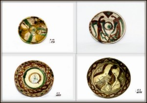
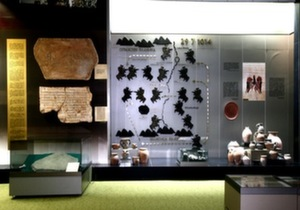

Средновековие
За пръв път селището Джума Пазари се споменава като град в османския документ от XVI в. Като Джума Пазари се среща и в регистъра на джелепкешаните (овцевъдите) от 1576. През XVI в. градът е център на нахия към Дупнишката каза. Под името Джума се споменава в много документи от края на XVI и до XVIII в. и в берат от 1688, под името Дупнишка Джумая — през.XIX в., а през 1878 — 1912 — под името Джума Баля (Горна Джумая). В началото на XIX в. става център на Горноджумайската каза. Сведения за града дават чужденци-пътешественици, минали през българските земи през 1662 г. Евлия Челеби отбелязва, че в градчето има 200 къщи, 80 дюкяна, голяма джамия и 4 минерални извора с басейни, а при 2 от тях — бани; през „сезона на черешите" към изворите се стичат по 40 000 — 50 000 д., за да търсят изцеление. Околностите са покрити с лозя и овощни градини.